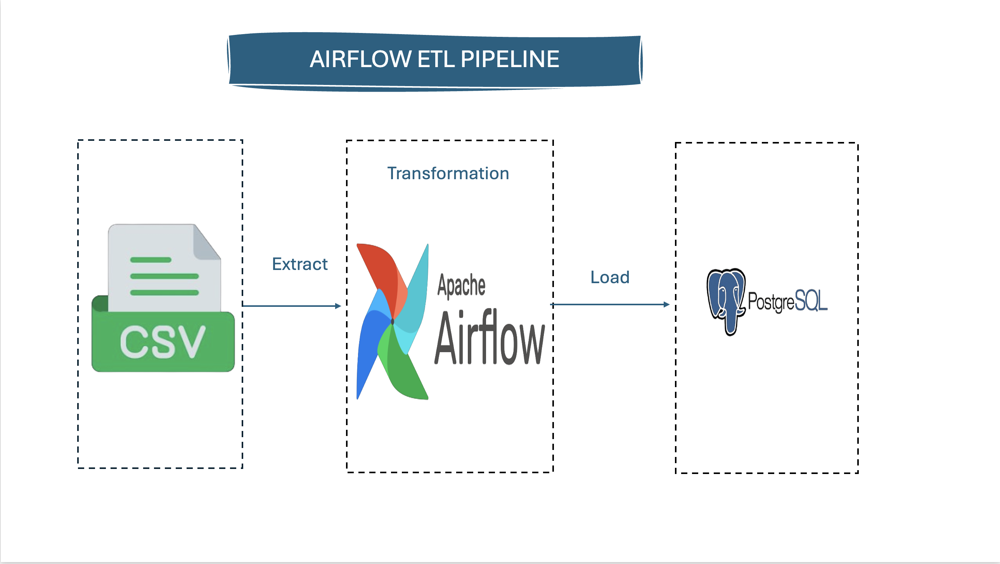
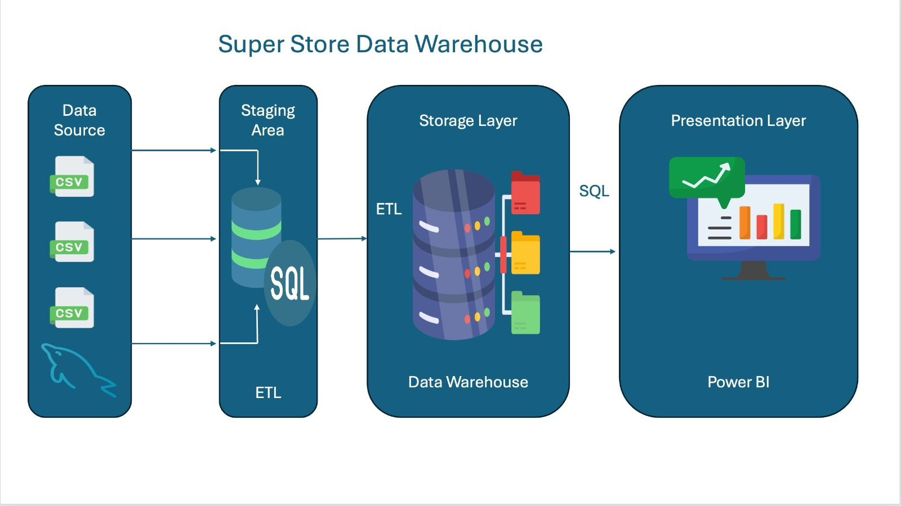

🍿 Netflix Data Warehouse Project
Built a scalable data pipeline on Amazon Redshift using dbt to transform and analyze Netflix datasets.
✨ Highlights:
🗂️ Staging, Dimension, and Fact tables
📸 Snapshots for historical changes (SCD Type 2)
✅ Custom tests & macros for data quality
📊 Analysis-ready queries for reporting and insights
💡 Goal: Turn raw Netflix data into a maintainable, testable, and analytics-ready warehouse.

An ETL pipeline using Apache Airflow to extract customer data from a CSV file, clean it with pandas, and load it into PostgreSQL. Includes automated email alerts for success and failure.
PowerBI, DAX & Data model

This project involves advanced data analysis using Power BI to gain insights from a Superstore dataset. 🛒 After thorough data cleaning and processing, a dashboard was created using DAX and various visualizations. 📊 Key insights include:
1️⃣ Total Customers 👥
2️⃣ Total Orders 📦
3️⃣ Products Sold 🛍️
4️⃣ Total Returns ↩️
5️⃣ Top-Performing Products and Regions 🌟

🏬 Super Store Data Warehouse
A data warehouse project designed to analyze sales, revenue, profit, and orders across regions. Built with MySQL and Pentaho using a star schema for efficient reporting and dashboards..
Pandas, Seaborn & Matplotlib

This project focuses on advanced data analysis of an E-Commerce dataset using Python. 🐍 The data was cleaned by handling null values, correcting datatypes, and removing outliers. 🧹 Visualization charts were created to reveal key insights, including:
1️⃣ Top 5 Highest-Priced Products 💰
2️⃣ Best Month for Sales 📅
3️⃣ Top 5 Countries by Revenue 🌍

This project focuses on analyzing an Apple App Store dataset using SQLite. Despite initial challenges with data import and SQLite's handling of large datasets, I successfully split the data for analysis. 🚀 The project involved performing Exploratory Data Analysis (EDA) 🧐, including checking for unique apps, missing values, app distribution by genre, and analyzing user ratings.
Key Insights 📊: 1️⃣ App Type and Ratings: Examined whether paid apps have higher ratings than free apps.
2️⃣ Apps with Multilingual Support: Explored if apps supporting more languages tend to have higher user ratings.
3️⃣ Highest-Priced Categories: Identified which app categories have the highest prices.
4️⃣ Low-Rated Genres: Checked for genres with low user ratings.
5️⃣ Description Length and User Ratings: Investigated if there's a correlation between app description length and user ratings. 📉📈

This project involves web scraping the Horn Africa Jobs website to gather information on job postings. 🌐 The goal is to extract essential job details, such as:
Job Name 💼
Salary 💰
Location 📍
The extracted data is then saved into a CSV file for further analysis and accessibility. 🗂️ This process helps in tracking job opportunities and analyzing trends in the job market, making it easier for job seekers to find relevant positions.
Python, PowerBI & BeautifulSoup

This project involved three key stages: data collection, transformation, and visualization.
1️⃣ Data Collection: Using web scraping, I gathered valuable table data from a website, akin to a pig foraging for truffles. 🐽
2️⃣ Data Transformation: I refined the dataset by removing null values and changing column data types.
3️⃣ Data Visualization: I created three clear visuals showing the top 10 countries by population, countries with the highest median age, and the top 5 countries by land area. 🌍📊
Additionally, I automated the process using Python to send the results via email. This project demonstrates how data analysis can uncover valuable insights effectively." 📈

📊 Problem Statement:
The goal is to analyze the dataset to extract meaningful insights regarding employee retention.
🔍 Data Analysis
We meticulously cleaned the data by addressing duplicates, null values, and errors. Additionally, we categorized working years into four groups: (1-10 years), (11-20 years), (21-30 years), and (31-40 years). Using pivot tables and pivot charts, we created an interactive dashboard.
💡 Insights
Employee Count: The current number of employees exceeds those who left. 👥
Education: Departing employees were more likely to hold bachelor's degrees compared to master's degrees. 🎓
Departments: The Research and Development department had the highest turnover, yet it also housed the most employees. 🏢
Job Roles: The Sales Executive role saw the highest number of departures. 👔
These insights highlight key factors influencing employee retention and turnover. 📈📋🔍